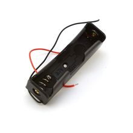

Бокс для 1 аккумулятора 18650
Держатель (бокс) для одного цилиндрического Li‑ion аккумулятора типоразмера 18650. Используется для быстрой и безопасной установки батареи без пайки прямо к банке.

Документация
Характеристики
Подробнее
Это корпус-держатель для одной аккумуляторной ячейки 18650 с контактами и выводами для подключения к плате или проводам. Такие боксы применяют в портативной электронике, самодельных устройствах, фонарях, измерительных приборах и резервном питании. По типовым данным держатели этого класса рассчитаны на одиночную цилиндрическую ячейку 18650 и выпускаются в вариантах для поверхностного монтажа или выводного монтажа. У многих моделей полярность промаркирована, а конструкция допускает установку как обычных, так и защищённых аккумуляторов, если это указано в конкретном datasheet. Для точной посадки важно сверяться с габаритами самого держателя и длиной защищённой 18650-ячейки.